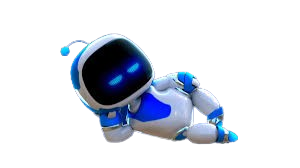
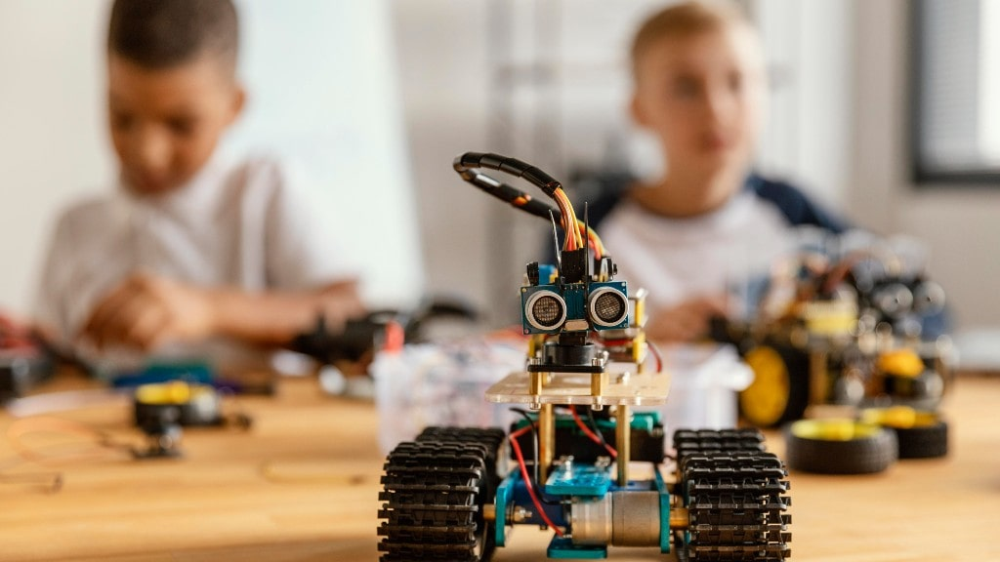

¿Qué es la Robótica?
 La robótica es la ciencia y tecnología dedicada al diseño, construcción y uso de robots. Estos robots pueden ser máquinas programables que realizan tareas físicas o digitales, con distintos niveles de autonomía. La robótica combina conocimientos de mecánica, electrónica, informática e inteligencia artificial.
Componentes principales de un robot
- Sensores: Permiten al robot percibir su entorno (por ejemplo, sensores de temperatura, luz, distancia o sonido).
- Actuadores: Son las partes que producen movimiento, como motores o brazos mecánicos.
- Procesador: Es el "cerebro" del robot, donde se toman decisiones basadas en los datos recibidos.
- Software: El programa que controla el comportamiento del robot.
Tipos de robots
- Robots industriales: Se utilizan en fábricas para tareas como soldar, ensamblar o pintar automóviles.
- Robots de servicio: Diseñados para ayudar a las personas en el hogar, hospitales o restaurantes.
- Robots móviles: Pueden desplazarse por diferentes entornos (por tierra, aire o agua).
- Robots humanoides: Tienen forma y comportamiento similar al de un ser humano.
- Robots educativos: Usados en escuelas para enseñar programación, lógica y ciencia.
Aplicaciones de la Robótica
- Industria: Robots que ensamblan piezas, sueldan, pintan y realizan tareas repetitivas con precisión y velocidad.
- Medicina: Robots quirúrgicos, prótesis inteligentes y dispositivos para rehabilitación.
- Exploración: Robots enviados al espacio (como los rovers de Marte) o al fondo del océano.
- Educación: Herramientas de aprendizaje que ayudan a los estudiantes a aprender programación y tecnología.
- Hogar: Robots aspiradores, asistentes personales y dispositivos automatizados.

Importancia de la Robótica
La robótica está transformando muchas áreas de nuestra vida. En el trabajo, mejora la producción y reduce los errores humanos. En la medicina, permite realizar cirugías de alta precisión. En la educación, fomenta el pensamiento lógico y la innovación. En el futuro, los robots serán parte cotidiana de nuestras casas y ciudades.
Ejemplos reales de robots
- Spot: Robot cuadrúpedo de Boston Dynamics usado en vigilancia y rescate.
- Da Vinci: Robot quirúrgico que ayuda en operaciones delicadas.
- Pepper: Robot humanoide diseñado para interactuar con personas en comercios y oficinas.
- Roomba: Robot aspirador que limpia suelos de forma autónoma en los hogares.